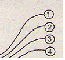

사진기능사 (2012-10-20 기출문제)
1과목: 사진일반
1. 인간의 눈으로 식별 가능한 가시광선의 범위는?
- 380 ~ 780 nm
- 300 ~ 780 nm
- 380 ~ 870 nm
- 500 ~ 900 nm
(정답률: 85%)

2. 청색사진용 전구(푸른 플래시 벌브)의 색온도는 어느 정도인가?
- 6000K
- 4500K
- 3400K
- 3200K
(정답률: 76%)
3. 컬러 네거티브 필름으로 인화를 할 때, 필름상의 옐로우(Yellow), 마젠타(Magenta), 시안(Cyan) 색이 사진에서 재현되는 색의 순서로 옳은 것은?
- Blue, Green, Red
- Blue, Red, Green
- Red, Green, Blue
- Green, Red, Blue
(정답률: 72%)
4. 색의 대비에 대한 설명으로 옳은 것은?
- 녹색은 적색에 비해 명시도가 크다.
- 어두운 색은 밝은 색보다 크게 보인다.
- 밝은 색은 돌출되어 보이고 어두운 색은 들어가 보인다
- 중앙의 색보다 배경의 색이 밝으면 중앙의 색은 크게 보인다.
(정답률: 87%)
5. 색의 3속성을 옳게 나열한 것은?
- 색상, 명도, 채도
- 색상, 명도, 휘도
- 색상, 휘도, 반사도
- 보색, 휘도, 반사도
(정답률: 96%)
6. 초창기의 사진촬영에서 10분 이상의 노출시간이 필요한 가장 큰 이유는?
- 셔터기능이 미비하기 때문
- 렌즈의 밝기가 낮기 때문
- 감광도가 낮기 때문
- 현상법이 미숙하기 때문
(정답률: 89%)
7. 눈에 Blue색이 보이는 피사체라면 백색광에서 어떠한색을 흡수한 것인가?
- RED
- CYAN
- ORANGE
- YELLOW
(정답률: 71%)
8. 중심과 주변부의 입사각의 차이로 발생하는 수차로 렌즈의 중심과 가장자리를 통과한 빛이 상을 맺는 위치가 달라서 일어나는 수차는?
- 구면수차
- 왜곡수차
- 코마수차
- 상면만곡수차
(정답률: 83%)
9. 어떤 색을 보고 흥분이 되기도 하고 반대로 침정이 되기도 하는데 이러한 현상은 다음 중 어떤 것과 가장 관계가 깊은가?
- 명도
- 착시
- 채도
- 잔상
(정답률: 71%)
10. 암실에서 흑백작업을 준비하던 중 정지 용액인 STOP BATH가 한 방울 눈에 들어갔을 때 응급조치로 옳은 것은?
- 알칼리성 안약을 눈에 넣에 재빨리 중성화 시킨다.
- 산성 약품이기 때문에 가만히 있는다.
- 흐르는 물로 충분히 씻은 후 응급실로 최대한 빨리 달려간다.
- 재빨리 약품이 닿은 부분이 빛에 노출되면 위험하기 때문에 붕대로 눈을 가린다.
(정답률: 94%)
11. 카메라 옵스큐라(camera obscura)에 대한 설명으로 틀린 것은?
- 카메라 옵스큐라는 라틴어로 "어두운 방" 이란 뜻이다.
- 그림을 그리기 위한 보조수단으로 만들어졌다.
- 소크라테스에 의해 고안되었다.
- 바늘구멍 사진의 원리와 비슷하다.
(정답률: 86%)
12. 안전활동을 수행할 때 주기적으로 안전상태를 확인하는 것을 무엇이라 하는가?
- 안전기준
- 안전수칙
- 작업위험분석
- 안전진단
(정답률: 93%)
13. 다음 중 유채색은?
- 옅은 분홍
- 흐린 회색
- 검정
- 흰색
(정답률: 92%)
14. 먼셀 표색계와 관계없는 것은?
- 먼셀은 미국의 화가, 색채학 학자이다.
- 색상, 명도, 채도의 기호를 H, V, C 로 표기한다.
- 뉴턴의 색을 보고 색체계를 정리하였다.
- 빨강, 노랑, 파랑의 3가지 색상을 기준으로 한다.
(정답률: 69%)
15. 디지털카메라에서 빛을 전기신호로 바꾸어 이미지를형성시켜주는 것은?
- LCD
- RAM
- PDP
- CCD
(정답률: 83%)
16. 필름이 일정한 빛에 대하여 반응하는 속도를 의미하는 것은?
- 감색도
- 감광도
- 해상력
- 선예도
(정답률: 95%)
17. ACR(Adobe Camera RAW) 프로그램에서 사진 보정이 끝난 후, 컨버팅 할 이미지의 성격을 결정하는 WorkFlow Options 항목에 해당하지 않는 것은?
- Save Image(이미지 저장)
- Space(색공간)
- Depth(비트심도)
- Resolution(해상도)
(정답률: 73%)
18. ASA 에 대한 설명으로 틀린 것은?
- American standards Association의 약자이다.
- 필름의 빛에 다한 민감도를 나타낸다.
- 수치가 높을수록 빛에 민감하지 못한 필름이다.
- 수치가 작을수록 예리한 상을 얻을 수 있다.
(정답률: 73%)
19. 잔류 할로겐화은이 황화은으로 필름이 변색되지 않게하기 위해서 행하는 가장 바람직한 조치는?
- 수세를 한다.
- 현상을 한다.
- 발색 표백을 한다.
- 정착을 한다.
(정답률: 56%)
20. 필름에서 유제층을 고르게 도포시켜 감광막을 형성하는데사용되는 단백질의 일종은?
- 글루코겐(Glucogen)
- 젤라틴(Gelatin)
- 셀룰로오스(Cellulose)
- 콜로이드(Colloid)
(정답률: 82%)
2과목: 사진재료 및 현상
21. 할로겐화은 중 주로 브롬화은과 요오드화은을 혼합하여 제조하는 감광재료는?
- 밀착 인화지
- 확대용 인화지
- 저감도 필름
- 고감도 필름
(정답률: 59%)
22. 노출과다된 필름의 사진 화조는?
- 세부 디테일 증가
- 로우키(Low key)
- 하이키(High key)
- 미들키(Middle key)
(정답률: 87%)
23. 감광되지 않은 할로겐화은을 물에 용해하기 쉬운 물질로 변화시켜 실용적으로 빠른 시간 내에 용해 제거하여 금속은 입자만 남겨서 안정된 사진이나 필름을 완성하는과정은?
- 정착
- 현상
- 정지
- 수세
(정답률: 57%)
24. 필름 베이스(Base)로 가장 많이 사용되는 물질은?
- 아세틸셀룰로오스
- 니트로셀룰로오스
- 폴리에스테르 수지 및 트리아세테이트
- 니트로벤젠
(정답률: 68%)
25. 사진현상 처리제 중 흑백사진 현상액의 액성은?
- 산성
- 중성
- 약산성
- 알칼리성
(정답률: 69%)
26. 다음 중 에너지가 가장 큰 빛은?
- 빨강
- 주황
- 노랑
- 초록
(정답률: 49%)
27. 다음 그림은 필름의 특성곡선이다. 가장 콘트라스트가높은 것은?

- ①
- ②
- ③
- ④
(정답률: 87%)
28. 흑백사진을 인화할 때, 정착액에 오래 둘 경우 나타나는 현상은?
- 인화지의 콘트라스트를 더 강하게 된다.
- 인화지의 흑화은이 미세하게 용해된다.
- 필름의 Base + fog 농도가 높아진다.
- 유제층에 레티큐ㄹ네이션 현상이 생긴다.
(정답률: 43%)
29. 일반적으로 다른 프린터들 보다 구입가격이 비싸지만프린트 속도가 빠르고 운영비용이 비교적 적게 드는 것은?
- 잉크젯(inkjet) 프린터
- 영료승화형(dye-sublimation) 프린터
- 아이리스(iris) 프린터
- 레이저(laser) 프린터
(정답률: 83%)
30. 컬러네거티브필름의 유제층 구조 중 하층에서 상층까지 감광유제층의 배열은?
- Blue - Green - Red
- Blue - Yellow - Red
- Red - Yellow - Blue
- Red - Green -Blue
(정답률: 63%)
31. 대형 카메라를 크게 앞부분(렌즈 보드)가 뒷부분(그라운드 글래스)으로 나눌 경우 뒷부분에 사용되는 액세서리가 아닌 것은?
- 렌즈 후드
- 쌍안 루뻬
- 밀러 아답터
- 초점유리후드
(정답률: 81%)
32. 일반적인 상하주행식 포컬플레인 셔터 카메라에서 스트로보(Strobo) 촬영시 사용할 수 있는 최대 빠른 동조 셔터 속도는?
- 1/8000초
- 1/1000초
- 1/500초
- 1/250초
(정답률: 71%)
33. 필름에 Irradiation 현상이 생기면 그 결과는 어떻게되는가?
- 필름의 농도가 짙어진다.
- Halation 현상이 나타난다.
- 상(象)의 선예도를 저하시킨다.
- 계조도가 높아진다.
(정답률: 74%)
34. 가이드넘버(Guide Number)가 45인 플래시로 2m 거리에서 촬영할 때 노출값은?
- f45
- f/32
- f/22
- f/16
(정답률: 86%)
35. 대형 카메라와 비교할 때 소형 카메라의 장점은?
- 기동성과 속사성이 있다.
- 화질이 좋다.
- 확대시 선명해진다.
- 주름막 조작(movement)가 가능하다.
(정답률: 88%)
36. 일안반사식 카메라의 장점이 아닌 것은?
- 피사계 심도를 직접 볼 수 있다.
- 렌즈의 교환이 용이하다.
- 특수 액세서리의 효과를 직접 확인할 수 있다.
- 활영 순간 미러가 올라가므로 잘 보이며 충격이 없다.
(정답률: 77%)
37. 강한 빛이 렌즈에 닿으면 여러 렌즈에서 서로 반사하여 필름에 점 또는 조리가 무늬를 만들어 화상의 선명도를 해치는 현상은?
- 포그(fog)
- 헐레이션(halation)
- 플레어(flare)
- 이라디에이션(irradiation)
(정답률: 76%)
38. 컬러필름으로 구름이 있는 풍경을 활영할 때 흰구름과 푸른하늘을 분명하게 분리하는 역할을 가장 잘 해 줄 수 있는 필터는?
- UV
- PL
- ND
- FL
(정답률: 60%)
39. 24 x 36mm의 화면을 갖는 카메라는?
- 브로니칸
- 라이카판
- 126판
- 110판
(정답률: 87%)
40. 촬영자 자신을 촬영하기 위하여 셔터버튼을 누르고 10 여초 경과 후 비로소 릴리즈(release)가 작동하여 셔터가 개폐되는 장치는?
- 셔터 다이얼(shutter dial)
- 셔터 블레이드(shutter blades)
- 셀프 타이머(self timer)
- 셀프 콕킹(self cocking)
(정답률: 86%)
3과목: 사진기계 및 촬영
41. 입사식 노출계에 대한 설명으로 틀린 것은?
- 흰색 피사체는 희게, 검정색 피사체는 검게 표현될 수 있다.
- 수광부가 플라스틱 반투명한 반구형으로 되어 있다.
- 수광부에서는 180˚ 까지 모든 빛을 받아들인다.
- 수광부에 닿는 빛이 반사되는 반사량을 재는 것이다.
(정답률: 69%)
42. 카메라에서 반드시 갖추어야 할 기본요소로 볼 수 없는 것은?
- 렌즈(Lens)
- 셔터(Shutter)
- 몸체(Body)
- 플래시(Flash)
(정답률: 91%)
43. 렌즈셔터가 포컬플레인셔터보다 좋은 점은?
- 렌즈 교환이 쉽다.
- 각기 렌즈마다 셔터가 필요 없다.
- 빠른 셔터 스피드를 얻을 수 있다.
- 플래시 동조 촬영시 전셔터 범위내에서 촬영이 가능하다.
(정답률: 72%)
44. 확대 인화시 노출량과 가장 관계가 적은 것은?
- 전구의 밝기
- 인화지의 감도
- 원판의 농도
- 필름의 크기
(정답률: 65%)
45. 수평각 100~360˚ 정도로 활영할 수 있는 초광시야(超廣視野) 카메라는?
- 파노라마 카메라(panorama camera)
- 프레스 카메라(press camera)
- 스프링 카메라(spring camera)
- 박스 카메라(box camera)
(정답률: 88%)
46. 다음 중 데이라이트(daylight) 타입의 컬러필름으로 촬영할 때 가장 붉게 나타나는 것은?
- 형광등
- 촛불
- 스트로보
- 흐린날 파란하늘
(정답률: 81%)
47. 피사계 심도에 대한 설명으로 틀린 것은?
- 조리개의 수치가 클수록 깊어지고, 작을수록 얕아진다.
- 렌즈의 초점거리가 짧을수록 깊어지고, 길수록 얕아진다.
- 촬영거리가 멀수록 깊어지고, 가까울수록 얕아진다.
- 피사계 심도가 깊으면 화면이 흐려진다.
(정답률: 66%)
48. 카메라의 보관에 영향을 가장 적게 주는 것은?
- 겨울철 난방
- 장롱 속의 나프탈렌
- 밀폐된 상자안의 실리카겔
- 벤젠이나 아세톤에 의한 세척
(정답률: 70%)
49. 텅스텐용 컬러 필름(Tungsten type B)으로 일광에서 촬영할 때 사용되는 필터로 가장 적합한 것은?
- NO.80A
- NO.81A
- NO.82A
- NO.85B
(정답률: 58%)
50. 색에 대해서는 변화를 주지 않고 광량만 감소시켜 주는 역할을 하는 필터는?
- PL
- UV
- SL
- ND
(정답률: 79%)
51. 광각렌즈의 사용에 대한 설명으로 틀린 것은?
- 화상이 작게 표현된다.
- 화각이 좁아진다.
- 원근감이 과장된다.
- 피사계 심도가 깊어진다.
(정답률: 76%)
52. 노출계는 몇 % 의 반사율을 기준으로 하는가?
- 18%
- 20%
- 25%
- 50%
(정답률: 86%)
53. 컬러 확대기의 광원으로 가장 알맞은 것은?
- 불투명백열 전구
- 형광 전구
- 할로겐 전구
- 크세논 전구
(정답률: 71%)
54. 뷰 카메라의 장점이 아닌 것은?
- 주름막 조작이 가능하다.
- 화면 전체의 초점을 확인할 수 있다.
- 왜곡되는 상을 교정할 수 있다.
- 휴대하기 편리하다.
(정답률: 86%)
55. 소형 카메라의 표준렌즈의 화각은 대략 어느 정도인가?
- 10˚
- 25˚
- 47˚
- 80˚
(정답률: 76%)
56. 가이드 넘버가 220 이고, 플래시로부터 촬영될 피사체와의 거리가 10m 라면 적정 노출을 위한 조리개 값은?
- f/22
- f/16
- f/11
- f/8
(정답률: 82%)
57. 120 필름을 사용하는 이안반사식 카메라의 화면 규격은?
- 24 x 36mm
- 6 x 6cm
- 6 x 8cm
- 4 x 5 "
(정답률: 62%)
58. 표준렌즈의 초점거리는 대략 어디에 해당하는가?
- 사용되는 필름 화면 크기의 가로 길이
- 사용되는 필름 화면 크기의 세로 길이
- 사용되는 필름 화면 크기의 대각선 길이
- 사용되는 필름 화면 크기의 세로와 가로를 합한 길이
(정답률: 85%)
59. 현상과 정착이 끝난 젖어있는 상태의 필름을 고온의 물속에 넣으면 감광유제 속의 미세한 은입자가 모여 입자가 굵어지거나 경막의 균열이 일어난다. 이와 같은 방법을 이용한 사진표현 방법은?
- 솔라리제이션
- 릴리프
- 레티큘레이션
- 포스터리제이션
(정답률: 63%)
60. 카메라 내부에 설치된 센서로 광량을 측정하는 방식은?
- TTL 측광 방식
- AUTO FLASH 방식
- MANUAL 방식
- NON FLASH 방식
(정답률: 88%)